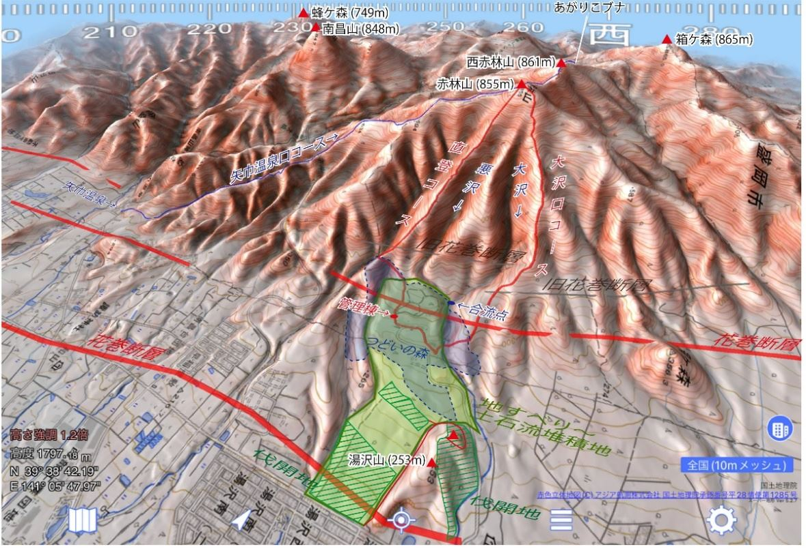
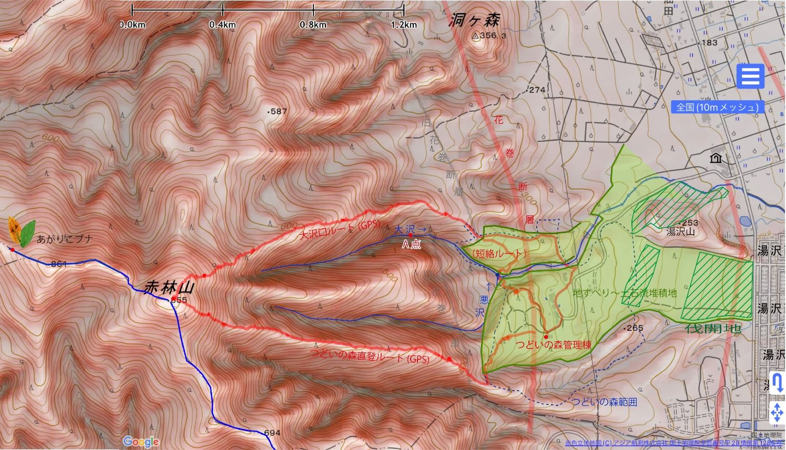
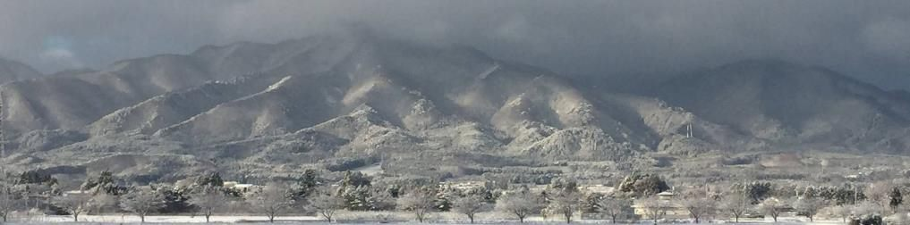
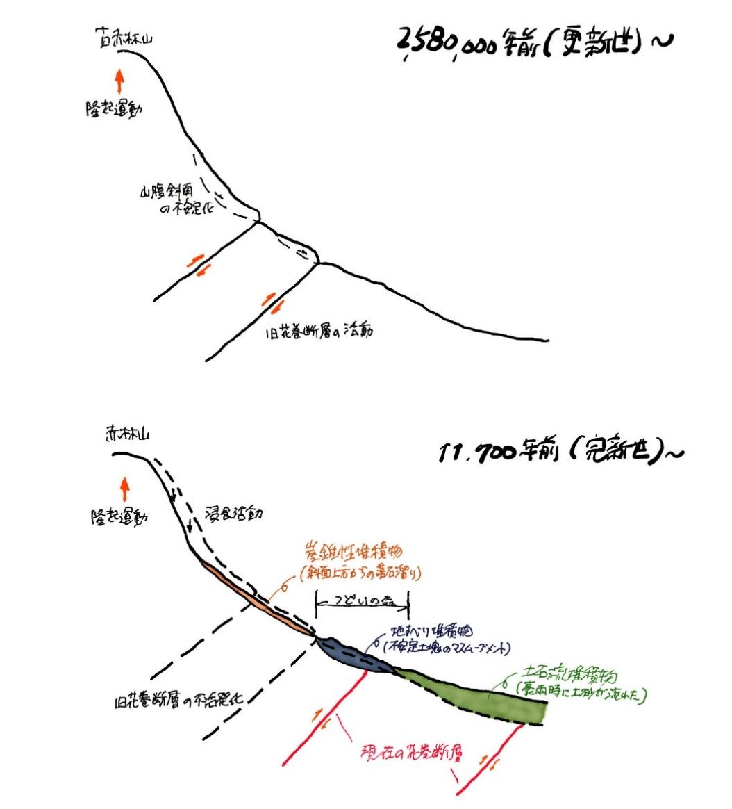
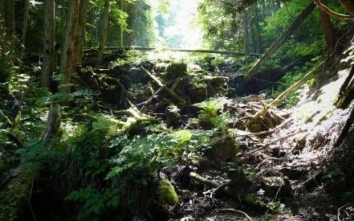

キャンプ場にテントを張るとき、「ここ、ずいぶん平らだな」と思ったことはありませんか。山のすぐふもとなのに、どうしてここだけ平らなのでしょう。その答えは、数千年前にこの場所で起きた、かなり大きな出来事にあります。
山のふもとに、ぽっかりと平らな土地
つどいの森は、赤林山（855m）の東のふもとにあります。地形を立体的に表した地図で眺めると、急な斜面が連なるなかに、このあたりだけ平らな土地が広がっているのがよく分かります。キャンプ場も、グラウンドゴルフのコースも、芝生広場も、この平らな土地があるからこそ置けているわけです。

赤色立体地図 ©アジア航測株式会社／国土地理院承認 作図：スーパー地形
この立体的な地図は「赤色立体地図」といって、斜面の急なところほど赤が濃く、尾根は明るく谷は暗く描かれます。影の向きがないので、どちらを向いた斜面でも凹凸がそのまま読み取れるのが利点です。箱ヶ森のページでも、この地図の読み方を紹介しています。
平らな土地は、山が崩れてできた
結論から言うと、この平らな土地は山から流れ下ってきた大量の土砂が積もってできたものです。
赤林山の山頂から東へ、「悪沢（わるさわ）」という沢が流れています。この沢が大量の土砂を運び出し、ふもとに積もらせました。ところが積もった土砂は、やがて悪沢自身の行く手をふさぎます。押し出されるように流れを北へ変えた悪沢は、隣を流れる「大沢（おおさわ）」と合流することになりました。
大沢のほうも事情は同じで、自分が運んできた土砂を避けるように南へ寄っていきます。たがいに押し合うようにして出会った、その合流点は、いまは通行止めになっている遊歩道の丸木橋のすぐ上流で見ることができます。

赤色立体地図 ©アジア航測株式会社／国土地理院承認 作図：スーパー地形
そもそも、なぜそんなに土砂が動いたのか
山の土砂がこれほど大きく動くには、きっかけが要ります。その犯人は、山を押し上げた断層でした。
つどいの森の西側にそびえる志波三山（しわさんざん）。その東のふちには、「花巻断層」という活断層が南北に走っています。活断層とは、いまも動く可能性がある、地面の裂け目のことです。
さらに地形をよく見ると、花巻断層よりも西の山の斜面に、何本もの筋のような地形が読み取れます。これは、もっと古い時代に動いた断層の跡だと考えられます。言ってみれば「昔の花巻断層」で、志波の山々を押し上げた張本人です。
断層で山が持ち上がると、そのふもとには三角形をした斜面がいくつも並びます。「三角末端面（さんかくまったんめん）」と呼ばれる地形で、断層が山をつくった証拠のようなものです。つどいの森の周辺にも、これがきれいに発達しています。

地殻変動のデータを見ると、いまこのあたりの隆起は一時的に止まっているようです。とはいえ、何百万年という地質の時間からすれば、それはまばたきにも満たない一瞬のこと。山が持ち上がる動きそのものが終わったわけではありません。
こうして急に持ち上げられた斜面は不安定になり、やがて大きく崩れました。その土砂がふもとに積もってできたのが、いまつどいの森がある平らな台地と、その下に続く緩やかな斜面なのです。

それは、いつ起きたのか
手がかりは、断層と土砂の前後関係にあります。
つどいの森のど真ん中を、花巻断層が南北に走っています。ところが、この断層は地すべりで動いた土の塊をずらしていません。断層が動いたあとに土砂がかぶさった、ということです。
花巻断層が最後に動いた時期は、花巻市北湯口での調査（断層をまたぐ溝を掘って地層のずれを調べる方法）から、紀元前2200年頃と推定されています。ただし花巻断層は、何本かの断層が少しずつずれて並ぶ帯のような構造です。南の北湯口で動いたからといって、北端にあたるつどいの森付近まで同時に動いたとは限りません。
日本の活断層が動く間隔は、平均すると1万年に1度ほど。その尺度で考えると、数千年前に地すべりが起きて断層を覆い、それ以降この場所では動いていない——そう考えるのが自然です。
この土地のできごと
- 約258万年前から昔の断層が動き、志波の山々が押し上げられる。ふもとに三角形の斜面が並ぶ
- 約1万1700年前から隆起と浸食が続き、急になった斜面がだんだん不安定になる
- 数千年前斜面が大きく崩れ、土砂がふもとに積もる。いまのつどいの森の平らな土地ができる
- 紀元前2200年頃花巻断層が南の北湯口付近で動いたと推定される
- 2013年8月9日線状降水帯による豪雨。大沢の中流に土砂が堆積する
- いまその平らな土地の上で、キャンプをしている
沢のなかの、自然のダム
大沢をさかのぼると、落差5mほどの土砂のダムがあります（前の図の「A点」）。人がつくったものではありません。右岸に立つサワグルミの木が、上流から流れてきた倒木をせき止め、そこへ土砂が押し寄せて、ひとりでにダムになったのです。

2013年8月9日、雫石から紫波にかけて線状降水帯による豪雨がありました。このとき、自然にできた土砂ダムはびくともしませんでした。
一方で、100mほど下流にあった治山ダム（山からの土砂を受け止めるためにつくられた施設）では、想定を超える水が落ち口から流れ落ち、その勢いで自分の土台を削ってしまいました。それがきっかけで土石流が発生し、大沢の中流およそ500mにわたって土砂が積もったのです。
自然のままなら軽い被害で済んだかもしれないものが、人の手で設けた施設があったために、かえって大きな土砂の移動を引き起こした——そう言える出来事でした。
これから考えていくこと
この一帯は国有林で、治山ダムは必要があってつくられた施設です。下流には湯沢団地があり、災害時に避難が難しい方が利用する施設もあります。治山施設をさらに増やす計画が進められてきた背景には、そうした事情があります。
日本の砂防・治山の取り組みは、これまでそれなりにうまく働いてきました。けれども温暖化によって豪雨が頻発するようになったいま、これまでのやり方だけでは太刀打ちできない場面が出てくるのではないか。大沢で起きたことは、そのことを静かに予告しているように思えます。
歩いて、確かめてみる
ここまでの話は、園内や周辺を歩くと実際に体で確かめられます。
- 湯沢山（253m）｜2022年春の伐採で登りやすくなり、北側の眺望が開けました。北側のふもとの斜面を眺めながら、背中側に広がる土砂の堆積地を想像してみてください
- 赤林山への直登ルート｜こちらは眺望がほとんど効きません。そのかわり、足の疲れそのものが斜面の急さを教えてくれます
- 遊歩道の丸木橋の上流｜悪沢と大沢が出会う合流点です（現在、遊歩道は通行止めです）
ことばのメモ
- 活断層
- いまも動く可能性がある、地面の裂け目。動くと地震が起きます
- 三角末端面
- 断層で山が持ち上がるとき、ふもとに並んでできる三角形の斜面
- 地すべり
- 斜面の土の塊が、まとまってゆっくり滑り落ちる現象
- 土石流
- 大雨のときに、土砂と水がいっしょに勢いよく流れ下る現象
- 治山ダム
- 山から流れ出る土砂を受け止めるためにつくられた施設
- 赤色立体地図
- 斜面の急さを赤の濃さで、尾根と谷を明るさで表した地図。影の向きがなく、凹凸が読み取りやすい